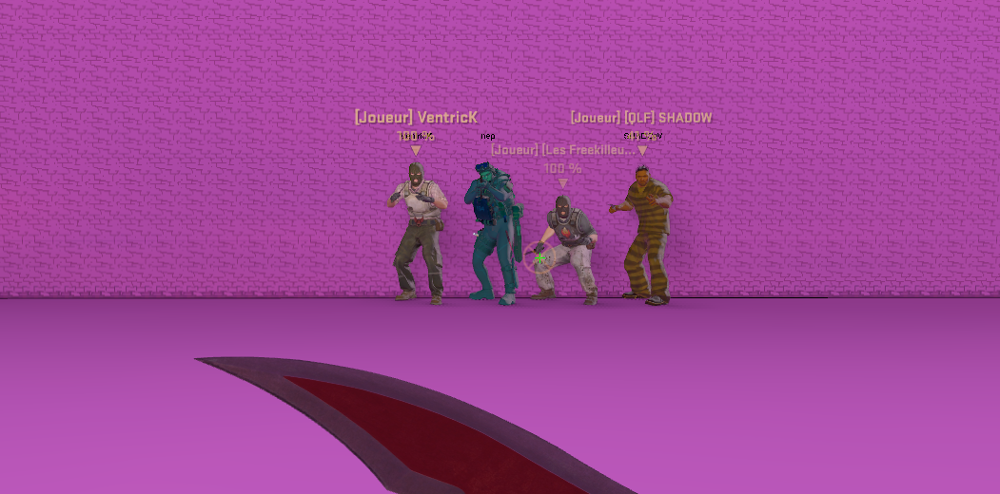

Les gardiens
Les gardiens ont pour but d'encadrer les prisonniers afin d'aider le Warden dans l'accomplissement de ses ordres.
-
La seule sommation autorisée est la sommation orale. (Serveur Kill)
TOTO
TOTO 2
- Il est autorisé de se défendre si un prisonnier se montre hostile et vous attaque sauf si vous cherchez le cut.
- Un prisonnier peut être « hostile » si vous ne l'avez pas tuer. C'est un statut permanent qui est attribué par un gardien après qu'il lui ai demandé de se rendre.
- Après l'ouverture des jails, des ordres peuvent être donner, les prisonniers qui ne le respectent pas peuvent être tués sans sommation orale.
- Le dernier gardien en vie peut tout faire, l'annonce du DCT n'est pas obligatoire mais préférable.
- Être DCT n'est autorisé que si il a eu plus de 3 CT au DÉBUT du round ( kill par un terro ou le monde, le slay/kick/ban/swap ne compte pas).
- Être a son ordre signifie être à l'endroit désignée par le chef des gardiens, voir le groupe principal de terro (à l'ordre ) et si possible le chef des gardiens, tout en étant à une distance raisonnable.
- Un gardien ne peut pas voir un terro ( par exemple lancé une HE ) si il est packé avec un groupe de terro.
- Les conduits sont invisibles aux yeux des CT, sauf si un terro a tiré à l'intérieur ( conduit visible ).
- Dans un conduit, si un T a une arme en main et est identifiable (dépacké d'un autre T) il est visible (uniquement le T, le conduit n'est pas visible si il n'y a pas eu de tirs a l'intérieur).
- Les CT ont le droit de se défendre dans les jails.
- Le ratio "idéal" est de 1 gardien, pour 2 prisonniers, ce ratio n'est pas forcément fixe, un staff peut demander des changements d'équipe en fonction de la map et de comment ça se passe.
- Il est celui qui va diriger la prison le temps d'un round (ou moins…). Il est le seul à pouvoir donner des ordres.
- Si le chef des gardiens désigné ne veut/peut pas assurer les ordres, alors les gardiens peuvent s'accorder sur un nouveau chef. Celui-ci reste chef jusqu'à sa mort.
- Le chef des gardiens est responsable de l'ouverture des jails : il doit les ouvrir, avec ou sans ordre. S'il ne peut pas les ouvrir, il doit clairement le signaler à l'oral ou à l'écrit.
- Le warden doit demander au dernier prisonnier en vie s'il souhaite prendre sa dernière volonté (voir Dernière Volonté)
- Les joueurs sans micros ne peuvent pas devenir chef des gardiens.
- Il est autorisé de tuer des prisonniers hostiles (voir Hostilité).
- Il est autorisé d'utiliser le pseudonyme d'un prisonnier pour l'identifier et de signaler à l'oral « Untel hostile ». Un prisonnier perdu de vue et non identifiable n'est plus hostile, à moins de l'avoir déclaré comme tel à l'oral.
- Il est autorisé de ramasser les armes dropées par les joueurs (vivants ou morts, gardiens ou prisonniers).
- Le dernier gardien a tous les droits (tuer jusqu'à la DV, passer dans les conduits, …).
- Il est autorisé aux joueurs sans micro de jouer en gardien à conditions qu'il y ai suffisamment de CT pour prendre les ordres.
- Les CTs peuveut kill directement les AKFs JAILS après 15 secondes de jeu.
- Il est interdit de tuer des prisonniers innocents (freekill), de leur infliger des dégâts sans raison valable (freeshot) ou de déclarer un prisonnier hostile sans raison.
- Il est interdit d'emprunter ou de casser les conduits ou les téléporteurs.
- Il est interdit de prendre les armes présentes autre part que dans l'armurerie, sauf en zone CT (voir : Les Zones ).
- Il est interdit de se mettre en danger volontairement (aller dans un pack de prisonnier, entrer dans un jeu, …).
- Il est interdit de mettre en danger les autres gardiens.
- Il est interdit de rester dans l'armurerie après l'ouverture des jails.
- Il est interdit de jouer avec les mots du styles (a mon GO et dire TOP).
- Toute collaboration avec les prisonniers est interdite (don d'arme pleine ou vide, aide à la rébellion, favoritisme).
- Il est interdit d'attaquer un prisonnier sans raison.
- Il est interdit d'emprunter les conduits.
- Il interdit en CT de lancer des grenades ( smoke, flash, HE, ou quoi que ce soit d'autres ).
- Les gardiens n'ont pas le droit de spray dans les fumigènes, de courtes rafales sans en abusez reste toléré.
- Interdiction de camp téléporteur (exemple sur clouds : un évadé camp l'arrivé des gardiens au téléporteur entre les deux îles).
- Interdiction de tirer dans l'armurerie.
- Camper devant ou dans l'armurerie.
- Le DCT n'a pas le droit de camp armurerie.